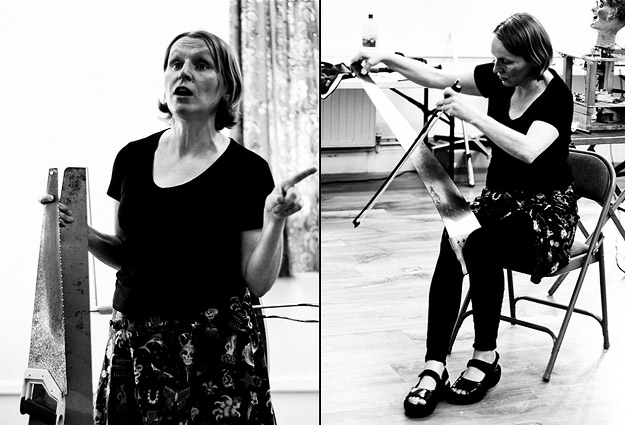

Our third event was something of a triumph; it was lively and well attended, and as ever our guests did us proud!
Here is the full audio recording, in two parts: Part1 / Part2
Here’s an overview of what went on, so you can access topics of interest:
Welcome

Photo: Pete Ashton
“I am aware that some of you know this, as some of you have been to every single If Wet.”
MortonUnderwood present…
[2:52 – 17:20 | Part 1]
Foghorn Requiem recording
[6:36 – 09:31 | Part 1]
We played back a recording of the Foghorn Requiem David made when we travelled up to South Shields the weekend before If Wet #3. In many senses, this was the first of what could potentially become a series of If Wet sonic outings…

Photo: Sam Underwood
“This is the finale. There is a mournful chorale at the end from the brass bands and then it goes to the foghorn part and they discharge the full extent of the air chambers through the foghorn, so you hear how the sound meanders and peters out.”
“They explained that normally they wouldn’t run the foghorn like that but […] because it was the last time it was ever going to be sounded properly they ran the cylinders right until everything was completely depleted and run out, which is why it sounds particularly mournful.”
3D mouthpieces
[9:36 – 17:20 | Part 1]
Next up, we provided a brief update on our work building 3D mouthpieces. David described and demonstrated a working saxophone mouthpiece.
Photos: Pete Ashton
“The software has been upgraded now so the rafts are much easier to come off in one piece.”
“I now need to re-learn some of the fundamentals so I am getting to the stage where I am building models myself.”
[Sam reflecting on what’s next in terms of our exploration of 3D printing]
Paul John presents the clavichord
[17:25 – 44:00 | Part 1]
Paul John discusses the history of clavichords, which featured him playing in-the-round.

Photo: Pete Ashton
“It’s closer to the piano in its expressiveness than it is to the harpsichord.”
“In the 18th century it was often used in stacks, in pairs, […] so that an organist could practice at home.”

Photo: Pete Ashton
“It came out of, probably, ancient Greek methods of teaching mathematics, the acoustics of music from a single stretched string between two points and finding that if you put pressure on the string here and there that you get the fundamental and the octave.”

Photo: Pete Ashton
The courtesy and attentiveness of an If Wet audience is always high (they have to put up with us blathering on after all) but in this section it was particularly tangible. The volume of the clavichord is such that it rewards close listening. It was a delight to behold how enchanted everyone looked when Paul was playing.
Next up, Sarah Angliss.
Sarah Angliss
[1:07 – 52:31 | Part 2]

Photo: Pete Ashton
“That’s the act. I genuinely don’t know quite what it is; it sort of lives somewhere between cabaret and experimental electronics.
“You actually imbue notes with life by sort of expressing yourself as you play the note. And on the recorder you have a very good parallel with what is going on with the clavichord.
“There is a roboticist, Rodney Brooks who said “The real world is its own best model”. […] You might spend a vast amount of money on bell samples but in the end the best bell sample is a bell, situated in a room, vibrating away as only bells can do. […] We are actually quite hungry for physical, situated sound. That’s something I am very, very into.
As a keen saw player, Sarah moves on to discuss and demonstrate the saw as a musical instrument.

Photo: Pete Ashton
“It was like the skiffle instrument of its time. It was what you did if you couldn’t afford a violin.”
[Sarah talking about saws as a musical instrument]

Photo: Pete Ashton
The discussion moved on to focus on performance and Sarah’s thoughts on this.
“Coupling; which is the idea that when I see a performance I want to see what the performer is doing, coupled in some obvious way to what we are hearing. Otherwise I will switch off.”
“Why are we all here sharing this sound rather than just simply listening to it at home?”
“You’ll notice at the beginning that I tuned up in front of you. I didn’t actually need to tune up in front of you. I do that before I start a show so that people realise I am controlling the sound, and I am not reacting to the sound.”
[Sarah talking about helping the audience to appreciate the cause and effect when she plays Theremin]
“People credit him with a lot more intelligence than he actually has. […] I am actually using old magician’s tricks, lots of misdirections.”
[Talking about her robot, Hugo]
Sarah moves on to discuss and demonstrate her phonograph.

Photo: Pete Ashton
“This is entirely clockwork sound, there is no electronic amplification whatsoever.”
[Demonstrating a recording.]
“It has not escaped out notice that the voices of the dead can be reheard.”
[Quoting Scientific American response to the phonograph when originally demonstrated.]
Members of the If Wet audience were then given the opportunity to make a recording on the phonograph. A short piece was recorded featuring the voices of Tim Cranmore (Worcestershire Poet Laureate), Sarah Angliss and David Morton on saxophone.
“You would have to remove that stylus and replace it with a heavier one. And then you spoke into the horn, the horn would vibrate the stylus and it was heavy enough to cut the groove in the wax.”
[On how to record using a phonograph]
“It’s an artefact of the recording process. How you have to perform and the way it gets filtered. So, it makes you start to realise that this idea of how old voices sound is often the recording process rather than the people.”
[On how to record using a phonograph]

Photo: Pete Ashton
Run What Ya Brung
[41:32 – 57:00 | Part 2]
We run a regular feature at If Wet in which members of the audience are invited to bring along and demonstrate instruments, sound objects and sonic oddities. Sometimes we get lots of contributions, sometimes just one (so far never nought). This month was stellar, with fabulous contributions from Caroline Radcliffe, Richard Windley and Tim Cranmore.
Caroline Radcliffe
[54:00 – 1:03:58 | Part 2 | pre-amble by Sarah Angliss]
Caroline Radcliffe demonstrated some clog dancing and spoke about how many of the moves, from the 18th century, imitated the machinery in the cotton mills.
“I get really fed up with all these techno people claiming that they’ve only just invented something. What I want to show is that repetitive labour and sound was connected way before Detroit techno and all sorts of other processes.”

Photo: Pete Ashton
Caroline Radcliffe
Richard Windley
[01:05:46 – 01:10:24 | Part 2]
We can’t get enough of Richard at If Wet and he was back with a bizarre self-made synth on a multi-layered stand.

Photo: Pete Ashton
“The band broke up after about four days.”
richardwindley.co.uk
Tim Cranmore
[01:10:50 – 01:20:54 | Part 2]
Tim is a local recorder maker and maker/player in the UK Vegetable Orchestra. This was his second contribution to If Wet, where he covered three-holed pipes, including two rare bass pipes.

Photo: Pete Ashton
“In the Mary Rose they found several musical instruments. […] The bass three-holed pipe they found was the only one that had ever been seen, and this is a copy of a bass three-holed pipe that was found in the Mary Rose.”
fippleflute.co.uk
Once again, the event ended with a lot of people sticking around to chat. One of the core aims of If Wet it to build links locally. We are confident there are people who share our interests out there and we’d like to hook up with them to form some sort of creative community. Another successful If Wet, see you at the next one!
________________________________________
The full set of Pete’s photographs of If Wet are available here.
A huge thank you to:
Everyone who presented! Everyone who engaged and provided feedback. Everyone who came. Kavita and Gill for running the bar and tidying up. Pete Ashton for taking photographs.